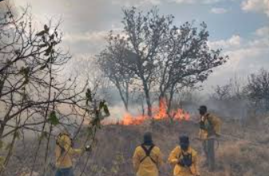
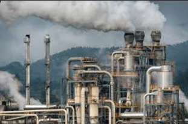
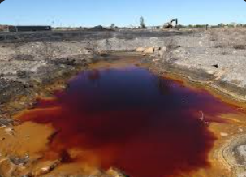

Causas principales de los ecocidios en México

Deforestación y tala ilegal
La deforestación es una de las causas más graves de los ecocidios, porque destruye los espacios donde viven muchas especies de plantas y animales. En México, los bosques y selvas pueden verse afectados por la tala ilegal, la expansión de zonas agrícolas, la ganadería, los incendios provocados y el crecimiento de las ciudades. Cuando se elimina la vegetación, el suelo queda desprotegido, se reduce la captación de agua y aumenta la erosión.
Además, la pérdida de árboles afecta el clima local, ya que los bosques ayudan a regular la temperatura y a conservar la humedad. Esto no solo daña a la naturaleza, también perjudica a comunidades que dependen del bosque para obtener agua, alimentos, madera de forma regulada o actividades económicas como el ecoturismo.

Contaminación industrial y urbana
Otra causa importante es la contaminación generada por industrias, fábricas, minas, drenajes y residuos urbanos. Cuando las aguas residuales o sustancias tóxicas llegan a ríos, lagos, barrancas o suelos, el ecosistema pierde su equilibrio. Esto puede matar peces, plantas acuáticas, insectos, aves y otros organismos que dependen del agua limpia.
En muchas zonas del país, los conflictos ambientales surgen porque las comunidades denuncian malos olores, agua contaminada, enfermedades o pérdida de actividades como la pesca y la agricultura. La contaminación no siempre se ve a simple vista, pero puede permanecer durante años en el suelo y en el agua, afectando a generaciones completas.

Minería y extracción de recursos
La minería puede causar daños ambientales cuando se realiza sin controles adecuados. Algunas actividades mineras utilizan grandes cantidades de agua y sustancias químicas para separar minerales, lo que puede contaminar ríos, mantos acuíferos y suelos. También puede modificar montañas, destruir vegetación y alterar paisajes completos.
El problema se vuelve más grave cuando las comunidades no son consultadas o cuando los beneficios económicos no compensan los daños ambientales y sociales. Por eso, la minería suele ser una de las actividades que más conflictos genera entre empresas, autoridades y habitantes de las zonas afectadas.
Megaproyectos y urbanización descontrolada
La construcción de carreteras, zonas turísticas, fraccionamientos, parques industriales o grandes obras puede provocar ecocidios cuando no se planea correctamente. Estos proyectos pueden fragmentar ecosistemas, desplazar especies, reducir zonas verdes y aumentar la demanda de agua, energía y servicios.
No todos los proyectos son negativos, pero cuando se realizan sin estudios ambientales serios o sin escuchar a las comunidades, pueden ocasionar daños difíciles de reparar. El desarrollo debe buscar equilibrio entre economía, sociedad y naturaleza.